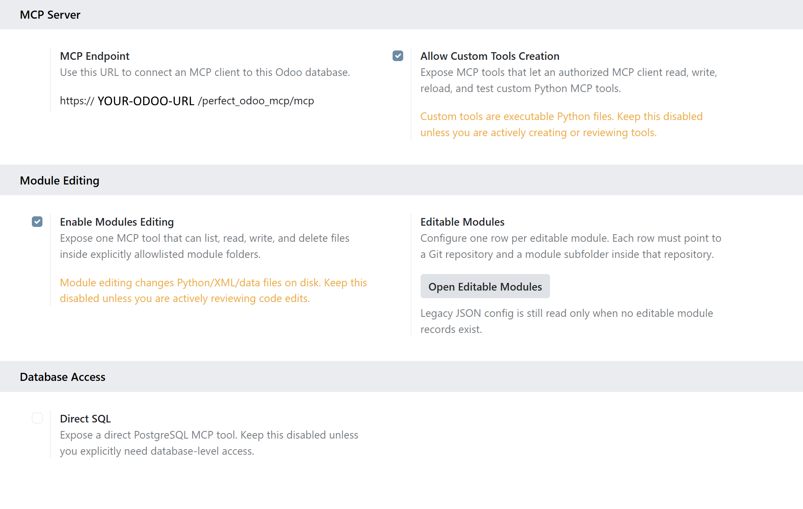

Perfect Odoo MCP
An Odoo addon that exposes an MCP endpoint inside Odoo. Users authenticate with Odoo OAuth, and tools run as the authorized Odoo user.
OAuth discovery Odoo ACLs Record tools Addon code lookup Optional SQL Module file editing
Install as a local addon
This module is not compatible with Odoo's Apps > Import Module upload flow. It defines Python controllers, models, OAuth routes, and MCP endpoints, so it must be installed from an Odoo addons path and loaded by the Odoo server.
Installation
Run the installer from the Ubuntu / Debian Odoo host or container. It detects the Odoo version, selects the matching branch, copies the addon, restarts Odoo when possible, and refreshes the app list when a database is provided.
curl -fsSL https://raw.githubusercontent.com/hidekiyamamoto/odoo-mcp/main/install-perfect-odoo-mcp.sh | bash -s -- --database YOUR_DATABASE
What it exposes
The MCP endpoint is shown in Odoo Settings after installation. MCP clients connect to that endpoint and use OAuth discovery to start the Odoo authorization flow.
Record access
Search and read Odoo records as the OAuth-authorized Odoo user. ACLs and record rules still apply.
Instance context
Store database-specific guidance for future AI sessions, including custom modules, models, and safe lookup patterns.
Addon inspection
Search and read Python addon code from installed Odoo modules to understand real model behavior.
Optional capabilities
The higher-risk tools are disabled by default and must be enabled from Odoo Settings.
Custom MCP tools
Create and test custom Python MCP tools from the Odoo data directory before publishing them.
Direct SQL
Expose PostgreSQL access only when needed, with readonly mode and statement checks available.
Module file editing
Allowlist installed modules, then list, read, write, or delete files inside those module folders.
Settings
The settings page shows the MCP URL and the feature toggles. Editable modules are selected from installed modules; the module path is detected automatically.

Main tools
search and fetch: connector-style record discovery.
odoo_search and odoo_search_read: precise model/domain reads.
install_info and odoo_python_lookup: installation and addon code discovery.
get-ai-context and set-ai-context: durable database guidance.